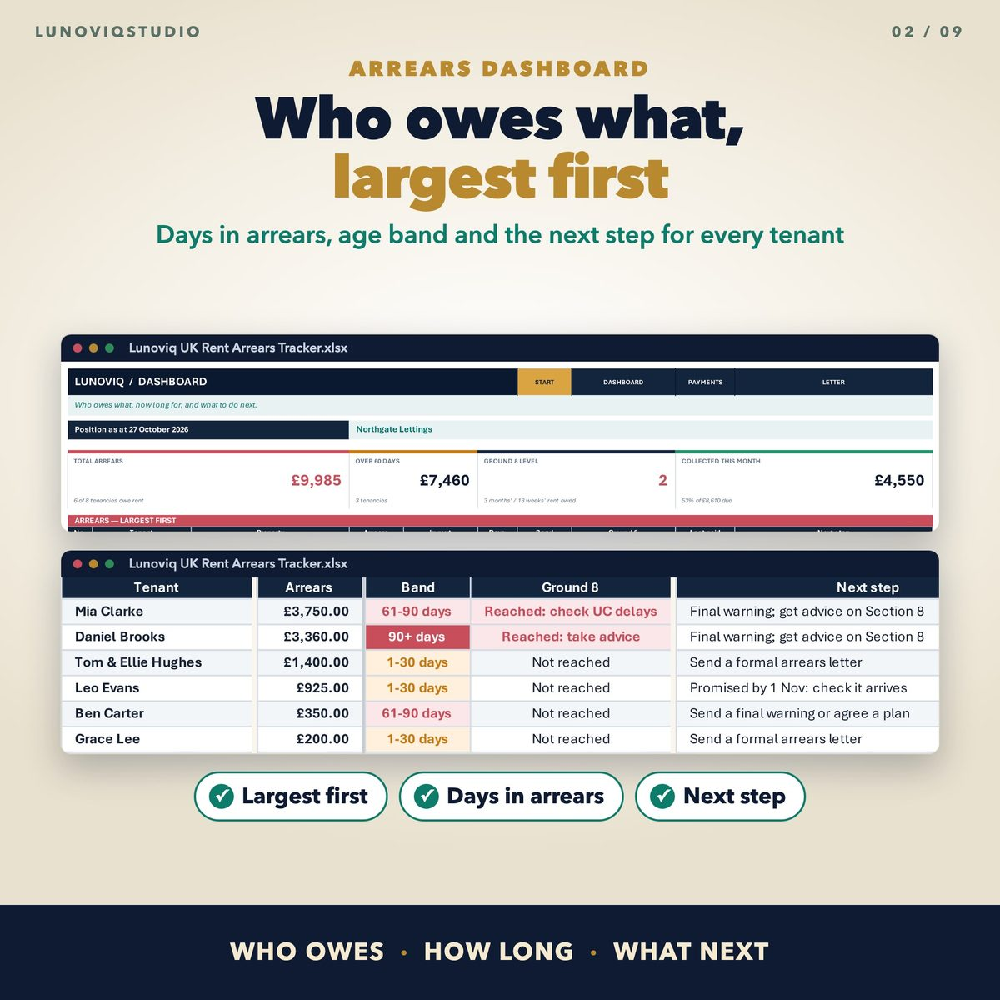
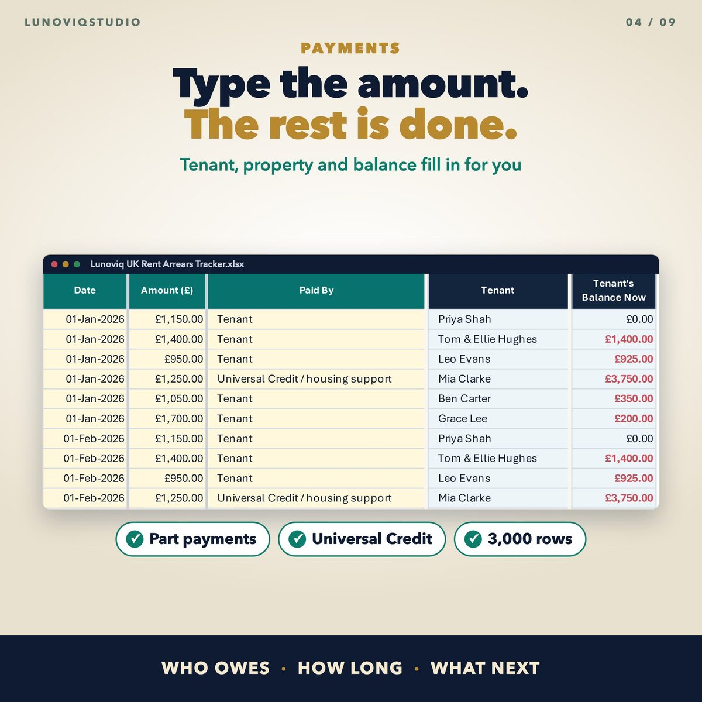
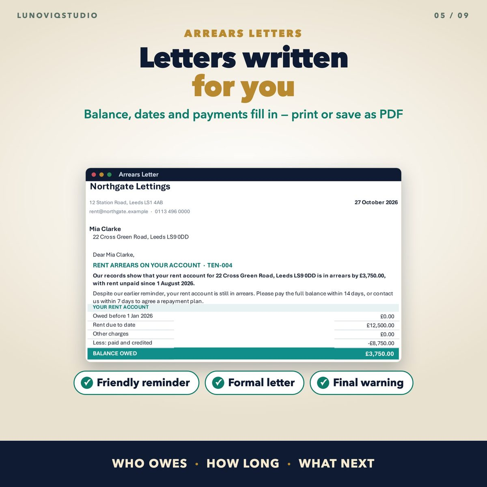
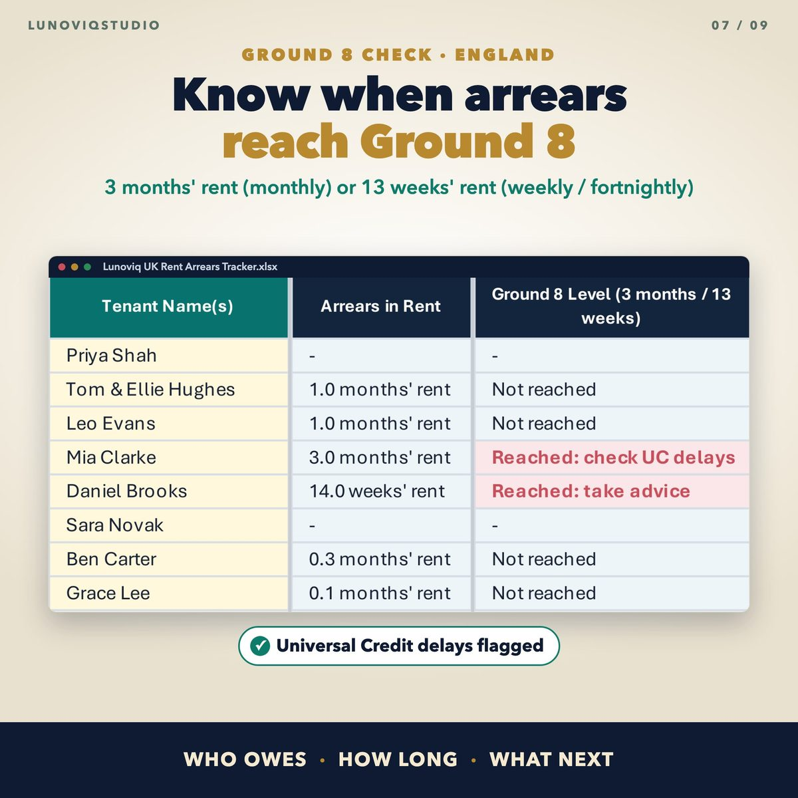

Home › Spreadsheets › UK Rent Arrears Tracker
UK Rent Arrears Tracker
See who owes rent, how much and for how long. Rent is charged for you, arrears are aged, the Ground 8 level is checked and arrears letters are written.
Made for: UK landlords, HMO owners and small letting agents who want one clear list of who owes what.
Get it on EtsyWhat it doesWhat it does
Rent charged automatically
Add the rent, frequency (monthly, weekly or fortnightly) and first due date. Every due date is charged for you, including Section 13 increases.
Payments in seconds
Pick the tenancy and type the amount. Tenant, property and balance fill in. Part payments, Universal Credit payments, permitted charges and write-offs.
Arrears dashboard
Total arrears largest first, days in arrears, 1-30 / 31-60 / 61-90 / 90+ day bands and the next step for each tenant.
Ground 8 check (England)
Flags when rent arrears reach 3 months' rent (monthly) or 13 weeks' rent (weekly or fortnightly), the level that applies from 1 May 2026.
Arrears letters
Friendly reminder, formal arrears letter and final warning, with the balance, dates and recent payments filled in.
Contact log
Every call, text, email and visit, with promises to pay marked kept, pending or broken.
See it




What you get
- Blank Excel workbook
- Sample workbook with eight example tenancies
- Google Sheets version (copy link in the PDF)
- Quick-start PDF
Instant download. One-off price, no subscription, no macros.
Questions
Is this legal advice?
No. It is a record-keeping tool. It shows when arrears reach the Ground 8 level, but check the current rules or take advice before serving notice.
How are part payments handled?
Payments clear the oldest rent first, then other charges, so the days in arrears are always counted from the oldest unpaid rent.
How many tenancies can it hold?
Up to 100 tenancies and 3,000 payment rows.